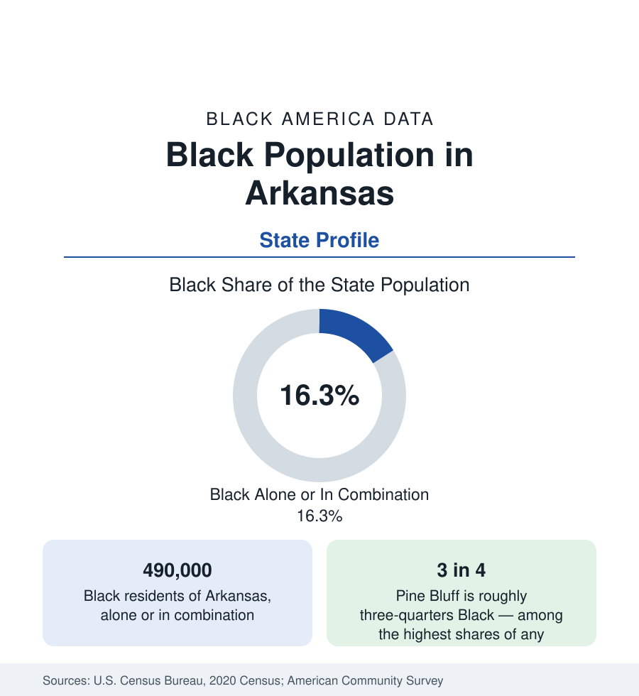

Black Census
Black Population in Arkansas: The Delta's Western Shore
About 490,000 Black Arkansans — one in six residents — from Little Rock and Pine Bluff to the Delta counties across the river from Mississippi. The census profile.

Arkansas holds about 490,000 Black residents — Black alone or in combination — roughly one in six of its people, with Black alone at about 453,000, or 15 percent. The state's Black geography is the Mississippi Delta's western shore: the eastern counties across the river from Mississippi record Black majorities of the same plantation lineage, while the population's center sits in the middle of the state, in Little Rock and Pine Bluff. This article profiles the population in the census data — a small state's Black population with an outsized place in the nation's civil-rights geography and its school-desegregation history.
The Arkansas Delta
The eastern tier of counties along the Mississippi — Chicot, Desha, Phillips, Lee, St. Francis, Crittenden, Mississippi County — forms the Delta's Arkansas side: flat, rich-soiled, and settled in the same plantation pattern as the Mississippi shore facing it. Black majorities persist across most of these counties, in several above two-thirds, alongside the Delta's signature data: the state's lowest incomes, its highest poverty rates, and steady population decline across every recent census as the farm economy mechanized. Helena-West Helena, once a thriving river port and a landmark of Delta blues geography, and West Memphis, the state's gateway city across from Memphis, anchor the region's towns. The Delta's Black culture — blues, gospel, and the church and lodge infrastructure of the plantation counties — is documented far beyond its population's size.
Little Rock and Pine Bluff
Little Rock, the capital, is about two-fifths Black, and holds the state's largest Black population and its deepest institutional base: Philander Smith University, the state's leading private HBCU; the state government workforce; and the medical center economy. The city's place in the national record — the 1957 crisis at Central High School, when the Little Rock Nine's enrollment became the school-desegregation era's defining confrontation — fixed its Black community in the nation's civic memory. Forty minutes southeast, Pine Bluff is the profile's extreme: roughly three-quarters Black, among the highest shares of any American city, home to the University of Arkansas at Pine Bluff, the state's public land-grant HBCU, and a city whose total population has fallen by a third from its peak amid the Delta region's decline — its data the hardest of any small city in this series.
The Rest of the State
Beyond the Delta and the center, Black Arkansas thins. The northwest — Fayetteville, Springdale, Rogers, Bentonville, the Walmart-centered boom region — records the state's smallest Black shares, in the low single digits, in its fastest-growing counties, so that the state's growth and its Black population are almost geographically separate: the estimates show Black population growth concentrated in the Little Rock suburbs (Conway, North Little Rock, the Saline County ring) while the Delta shrinks and the northwest booms without it. Texarkana, Fort Smith, and Hot Springs, the older secondary cities, hold Black populations in the range of a sixth to a quarter of their totals.
Composition and Indicators
Arkansas's Black indicators sit at the difficult end of the national distributions, reflecting the Delta's weight: income and poverty figures among the hardest in this reference's state tables, health outcomes carrying the Delta's burden in the public health data, and educational attainment lifted by the Little Rock metro toward — but not to — national Black averages. The population is overwhelmingly native-born, its foreign-born share among the nation's smallest, and its age structure is split between a young metro center and an aging Delta, where the median age in the plantation counties is the oldest in the state.
Reading the Arkansas Numbers
Arkansas Baptist College and Shorter College, both in the Little Rock area, complete the state's four HBCUs — a full institutional set for a Black population under half a million, and the education pipeline on which the state's Black professional class disproportionately depends.
Arkansas completes this section's Delta sequence — Mississippi facing it across the river, Louisiana below, Tennessee above — and the four-state comparison is the region's whole story: one plantation geography divided by state lines, diverging since by the accidents of which shore held a capital, a university, a port. Arkansas's Black population, at one in six of a small state, carries the Delta's data and Little Rock's history in the same half-million people.
More in Black Census
The Black Population of the United States: Size, Definitions, and Distribution
The Black population of the United States totals 52.8 million — 15.4 percent of the nation. How the Census Bureau defines and counts the population, and where it lives.
Black Median Household Income in the United States
Black median household income stands at $56,490 in the Census Bureau's annual income report — how the figure is measured, how it compares, and what drives it.
The Black Poverty Rate: Levels, Children, and the Long Trend
The official Black poverty rate is 17.1 percent — against 11.1 percent nationally and 7.7 percent for non-Hispanic White Americans. How poverty is measured and what the data show.
Source: U.S. Census Bureau, 2020 Census; American Community Survey; Population Estimates Program.